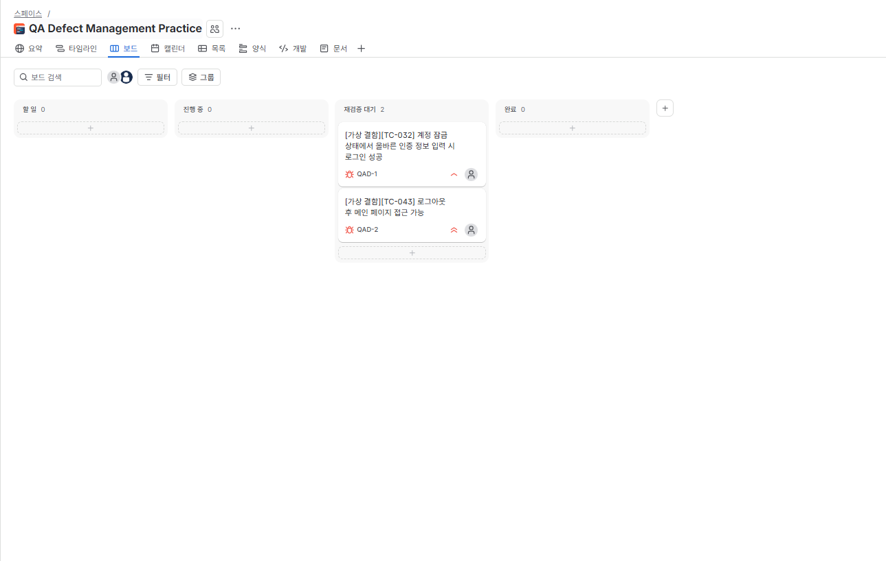

15자를 넘게 입력하면?
모호함 · 아이디 최대 길이는 지정돼 있지만, 초과 문자를 입력 단계에서 차단하는지 불명확했습니다.
확인 결과 · 15자까지만 입력되며 16번째 문자부터 차단합니다.
테스트 반영 · TC-003, TC-004
가상 웹 서비스의 로그인 기능을 대상으로, 최초 요구사항의 모호함을 찾아 구체화하고 테스트 케이스를 설계·실행한 개인 실습 프로젝트입니다. 결과뿐 아니라 판단의 근거와 요구사항 변경 과정을 기록했습니다.
로그인 기능을 테스트하는 과정에서 요구사항을 어떻게 해석하고, 모호한 조건을 어떤 방식으로 확인하며, 그 결과를 테스트 케이스에 연결할지 연습했습니다.
| 프로젝트명 | QA Practice Web / 로그인 기능 QA |
|---|---|
| 프로젝트 유형 | 가상 서비스 기반 개인 QA 실습 |
| 테스트 대상 | PC 웹 로그인 기능 (로컬 Flask 실습 환경) |
| 테스트 환경 | Windows · Chrome · Chrome DevTools |
| 주요 범위 | 입력값 검증, 로그인 성공/실패, 오류 메시지, 계정 잠금, 로그아웃 및 접근 제한 |
| 테스트 제외 | 회원가입, 비밀번호 찾기, 소셜 로그인, 서버 부하 및 네트워크 장애 테스트 등 |
| 산출물 | 요구사항 명세서 v1.0 / 분석서 / 명세서 v1.1 / 테스트 케이스 |
📂 요구사항 명세서·분석서·테스트 케이스 다운로드 바로가기 →
초기 요구사항 명세서(v1.0)를 검토하면서 테스트 결과가 달라질 수 있는 조건을 추가로 확인했습니다. 확인사항 12건을 분석서에 기록하고, 답변 내용을 최종 명세서(v1.1)에 반영했습니다.
모호함 · 아이디 최대 길이는 지정돼 있지만, 초과 문자를 입력 단계에서 차단하는지 불명확했습니다.
확인 결과 · 15자까지만 입력되며 16번째 문자부터 차단합니다.
테스트 반영 · TC-003, TC-004
모호함 · 비밀번호 마스킹은 정의돼 있지만, 표시/숨기기 기능의 제공 여부는 빠져 있었습니다.
확인 결과 · 눈 모양 버튼으로 표시를 전환하며 입력값은 유지합니다.
테스트 반영 · TC-023, TC-024
모호함 · 필수 입력 오류 메시지의 제거 시점과 두 입력란의 독립 처리 여부가 없었습니다.
확인 결과 · 해당 입력란을 수정하면 즉시 제거되고, 다른 입력란의 메시지는 유지됩니다.
테스트 반영 · TC-025~027
모호함 · 5번째 로그인 실패 시 일반 실패 메시지와 계정 잠금 메시지 중 무엇이 표시되는지 불명확했습니다.
확인 결과 · 5번째 실패 즉시 잠금 처리하고 잠금 메시지를 표시합니다.
테스트 반영 · TC-033
※ 위 사례는 요구사항 분석서와 v1.1 변경이력에서 발췌·요약했습니다. 답변자는 실제 회사 기획자가 아닌 실습용 가상 기획자입니다.
분석서의 추가 확인 12건을 질문·이유·가상 기획자 답변까지 원문 그대로 확인할 수 있습니다. 항목을 클릭하면 전체 답변을 펼쳐 볼 수 있어요.
※ 분석서는 추가 확인 행만 웹에서 제공합니다. '확인된 조건' 항목을 포함한 원본 시트는 아래 산출물에서 다운로드할 수 있습니다.
입력값의 유효/무효 구간은 동등 분할 관점에서 나누고, 글자 수 제한과 같이 경계가 분명한 조건은 경곗값을 중심으로 검증 항목을 구성했습니다.
| TC ID | 조건 | 기대 결과 |
|---|---|---|
| TC-001 | 4자 (최솟값 미만) | 길이 오류 표시, 서버 요청 차단 |
| TC-002 | 5자 (최솟값) | 길이 유효, 로그인 요청 전송 |
| TC-003 | 15자 (최댓값) | 길이 유효, 로그인 요청 전송 |
| TC-004 | 16자 입력 시도 | 최대 15자까지만 입력 허용 |
16번째 문자가 입력되지 않는지 확인하는 테스트와, 유효하지 않은 입력값이 서버로 전송되지 않는지 확인하는 테스트를 구분했습니다. 화면의 오류 표시뿐 아니라 개발자 도구의 Network 기록을 통해 서버 요청 여부도 확인 대상으로 삼았습니다.
| TC-001~014 | 아이디·비밀번호 길이 및 아이디 형식 검증 |
|---|---|
| TC-015~024 | 비밀번호 형식, 허용 문자 및 표시/숨기기 기능 |
| TC-025~036 | 필수 입력, 로그인 인증/실패, 오류 메시지 우선순위·제거 |
| TC-037~043 | 계정 잠금, 로그인 버튼, 로그아웃 및 접근 제한 |
제출한 테스트 케이스 파일에는 총 43건의 수행 결과가 기록되어 있으며, 모두 Pass로 표시되어 있습니다. 여기서의 수치는 문서에 기재된 결과를 집계한 값입니다.
미입력 및 형식 오류가 있는 경우 지정된 메시지가 출력되는지, 서버에 불필요한 로그인 요청이 발생하지 않는지 확인했습니다.
인증 성공과 실패, 계정별 실패 횟수, 5번째 실패 직후 잠금, 잠금 시간 만료 후 해제 등을 테스트 케이스로 구성했습니다.
TC-001부터 TC-043까지 원본에 기록된 테스트 목적, 사전 조건, 데이터, 절차, 기대 결과, 실제 결과, 비고를 열람할 수 있습니다. 검색 및 요구사항별 필터를 제공합니다.
※ 원본의 사전 조건·테스트 절차·실제 결과에는 줄바꿈이 포함되어 있어 상세 보기에서 그대로 표시합니다. 계정 정보는 모두 가상 실습용입니다.
테스트 케이스의 요구사항 ID 열을 기준으로 자동 연결한 추적표입니다. REQ를 선택하면 위 테스트 케이스 목록을 해당 요구사항으로 필터링합니다.
| 요구사항 | 기능 | 추가 확인 | 연결된 TC | TC 개수 |
|---|
실제 수행 결과는 수동 43/43 PASS · 자동화 34/34 PASS였습니다. 실제로 발견하지 않은 문제를 발견했다고 주장하지 않고, 보안 영향이 큰 2개 TC를 골라 가상 결함 등록 → 가상 수정 검토 → QA 재검증 계획을 Jira에서 연습했습니다.
두 결함은 모두 의도적으로 가정한 시나리오입니다. Jira의 가상 수정 완료 기록은 실제 소스코드 수정 내역이 아니며, 재검증과 회귀 테스트는 Not Run입니다. 현재 상태는 Ready for Retest입니다.

할 일 → 진행 중 → 재검증 대기로 상태를 이동하며 역할별 댓글과 검증 계획을 기록했습니다. 사진을 클릭하면 크게 볼 수 있습니다.
REQ-007 · 연관 REQ-005
비밀번호 5회 실패 시 10분간 잠기며 올바른 인증 정보로도 로그인할 수 없다.
잠금 상태임에도 정상 비밀번호로 인증 성공하고 /main으로 이동한다고 가정했다.
계정 잠금 정책이 우회되어 비정상적 시도를 제한하는 보안 요구사항을 충족하지 못함.
TC-032 직접 재검증, TC-028·029·033과 TC-037~041의 계정 잠금 관련 회귀 테스트 계획. 실행 여부는 Not Run.
REQ-010 · 연관 REQ-009
로그아웃 후 세션을 해제하고 /main 직접 접근 시 /login으로 이동해야 한다.
로그아웃 이후에도 /main에 접근되고 이전 사용자 아이디가 표시된다고 가정했다.
로그아웃 시 세션 무효화 실패로 공용 기기 등에서 이전 사용자 정보에 접근할 위험이 발생함.
로그아웃 후 /main 접근 제한·정보 미노출 확인, 정상 로그인·재로그인 관련 회귀 테스트 계획. 실제 실행은 Not Run.
43개 TC는 모두 수동으로 검증해 PASS로 기록했습니다. 이 중 반복 실행과 결과 판정에 적합한 34개 TC를 Python·Selenium으로 자동화했고, 9개 TC는 수동 검증으로 유지했습니다. 자동화하지 않았다는 이유로 테스트 범위에서 제외한 것은 아닙니다.
TC-001~022, TC-025~036. CSV 데이터를 불러와 화면 메시지, 요청 발생, 실패 횟수 초기화 등 조건을 확인합니다.
TC-023~024, TC-037~043. 표시/숨기기, 잠금 시간과 상태 변화, 로그인 버튼·로그아웃 등의 동작은 현재 수동 검증을 유지했습니다.
※ 34건의 자동화 PASS는 제출한 실행 화면에 표시된 값입니다. 자동화 커버리지 34/43은 TC 개수 기준으로, 코드 커버리지와 다릅니다.
원본 문서 4종을 그대로 제공합니다. 명세서는 PDF 열람과 DOCX 다운로드를, 분석서와 테스트 케이스는 위의 웹 열람 기능과 XLSX 다운로드를 지원합니다.
※ 이 자료는 취업 포트폴리오 공개를 위한 QA 실습 기록이며, 실제 운영 서비스의 보안 정보나 업무 문서가 아닙니다. 웹 페이지의 설명은 원본 문서의 발췌 요약입니다.
요구사항 문장의 작은 차이도 테스트 기대 결과에 영향을 줄 수 있었습니다. 따라서 테스트 케이스를 작성하기 전에 입력 제한, 오류 메시지 표시 방식, 계정 잠금 시점과 같이 결과를 좌우하는 조건을 먼저 구체화하는 흐름으로 문서를 정리했습니다.
자료 기준: 로그인 기능 요구사항 명세서 v1.0/v1.1, 요구사항 분석서, 로그인 기능 테스트 케이스(총 43건). 이 페이지는 자료 기반 요약본이며 원본 전체를 대체하지 않습니다.